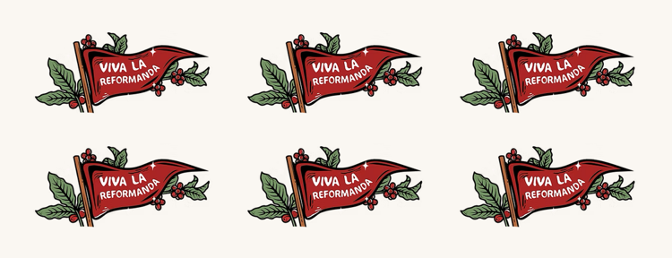

Junta 6 sellos y tu café americano va por nuestra cuenta
Tarjeta de lealtad digital · gratis · sin descargar nada
Escanea con la cámara de tu celulary enseña tu tarjeta en caja con cada compra

Reformanda Barra de Café · Ignacio Allende 23, Zona Centro, Xalapa · Aviso de privacidad en ciabeats6-bot.github.io/reformanda-lealtad/privacidad